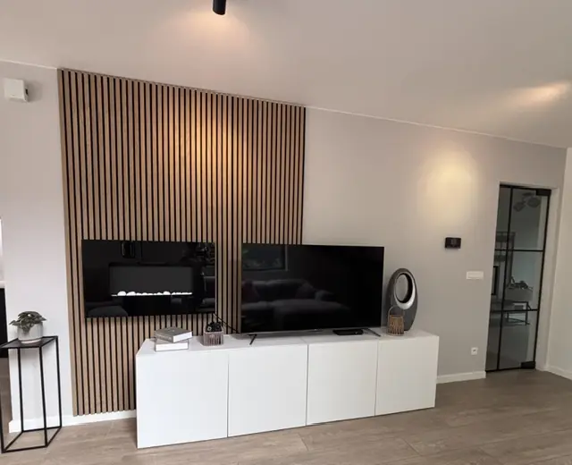

Weekend, 2 nachten
Vrijdag tot zondag. Aankomst vanaf 16.00 uur, vertrek zondag voor 10.00 uur. Optioneel zondagavond tot 19.00 uur bijboeken.
Weekend, midweek of gezinsvakantie vanuit Genk.
Kies een weekend, verlengd weekend, midweek of volle week in Home Terboekt: een luxe vakantiehuis voor acht personen aan de poort van het Nationaal Park.
Bedragen staan op prijzen. Hier alleen de formules.
Vrijdag tot zondag. Aankomst vanaf 16.00 uur, vertrek zondag voor 10.00 uur. Optioneel zondagavond tot 19.00 uur bijboeken.
Vrijdag tot maandag. Een extra ochtend in het park of een zondag in Maastricht zonder de zondagse uitcheckstress.
Maandag tot vrijdag. Rustiger paden in het Nationaal Park, vaak meer ruimte in C-mine, Bokrijk of Kattevennen.
Vrijdag tot vrijdag. Tijd voor Terhills, Oud-Rekem, een dagje Maastricht en — in seizoen — het zwembad zonder agenda-stress.
Inbegrepen: linnen, wifi, parking. Extra’s staan op prijzen en voorwaarden.
Vier kamers, omheinde tuin, in seizoen een privézwembad. Geen huisdieren, geen feesten. De homepage toont de ruimtes.

Vrijdag aankomen, zaterdag het park of C-mine, zondag vertrek. Uitstappen: Bezoek Genk.
Geen halve dag onderweg naar een bos. De poort van Hoge Kempen ligt tegenover de woning.
Volledige keuken voor acht, of een dagtrip naar Maastricht. Geen verplichte halfpensionformule.
Twee gezinnen arriveren apart, parkeren privé, delen daarna één huis.
Bekijk prijzen en stuur een reservatieaanvraag.